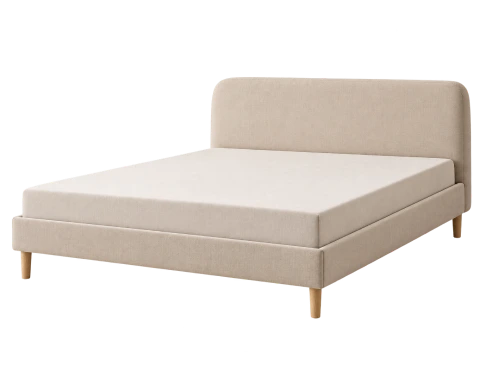

404 Page Not Found
We're sorry, but the page does not exist or has been moved. Please enter the correct URL.
Return to Homepage
We're sorry, but the page does not exist or has been moved. Please enter the correct URL.
Return to Homepage